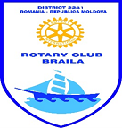
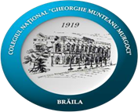

Rotary District 2241 România & Republica Moldova
Clubul Rotary Brăila
în parteneriat cu
Colegiul Național Gh. M. Murgoci- Brăila
organizează
CONCURSUL DISTRICTUAL TESTUL CELOR 4 ÎNTREBĂRI
-EDIȚIA a X-a-
MAI-IUNIE 2022
Etape:
- Locală : 2 mai - 3 iunie 2022
- Națională : 11 iunie 2022
Concursul se va organiza pentru fiecare dintre etape în secțiunile:
- Elaborare de eseuri
- Prezentarea eseurilor on-line( 11 iunie 2022, ora 15:00, Platforma Zoom).
- Premierea elevilor finaliști (on-line): 11 iunie 2022
PREȘEDINTELE JURIULUI:
ADRIAN LUCA - GUVERNATORUL DISTRICTULUI 2241 ROMÂNIA &REPUBLICA MOLDOVA
Coordonator:
Prof. dr. Ana Coman, Secretar executiv, Club Rotary Brăila
Pentru INFORMAȚII:
https://rotary4waycontest.ro/
https://comanana.github.io/index.html
annakomann@gmail.com